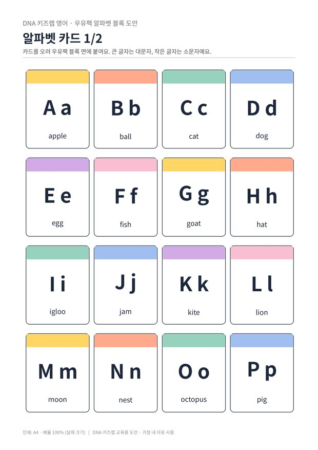

전체 단원 › 실험·활동 › 3~4학년 영어
우유팩 알파벳 블록

우유팩으로 만든 블록에 알파벳 카드를 붙여, 쌓고 굴리며 A부터 Z까지 익혀요.
만들기 40분 · 놀이 10분 · 난이도 ★☆☆ 쉬움
준비물
- 1L 우유팩 4~5개 — 깨끗이 씻어 말려요. 2개를 엇갈려 끼우면 정육면체 블록 1개가 돼요.
- 알파벳 카드 도안 — A~Z 26장 (A4 2장)
- 풀, 가위, 테이프 — 투명 테이프로 덮으면 오래 써요
하는 방법
- 블록 만들기
우유팩 아랫부분을 높이 7cm 정도로 잘라 상자 2개를 만들고, 서로 입구를 맞대어 끼우면 정육면체 블록이 돼요. - 카드 붙이기
알파벳 카드를 오려 블록 면에 하나씩 붙여요. 블록 5개면 26글자를 모두 붙일 수 있어요. - 굴려서 말하기
블록을 굴려 위에 나온 글자를 읽고, 그 글자로 시작하는 낱말을 말해요. "B! B is for ball!" - 이름 쌓기
블록을 돌려 가며 내 영어 이름이나 cat, dog 같은 짧은 낱말을 만들어 쌓아요.
3~4학년 영어는 알파벳을 보고 이름을 말하며, 대문자와 소문자를 짝짓는 데서 시작합니다. 글자 이름(비, 씨)과 낱말 속 소리(ㅂ, ㅋ)가 다르다는 것을 놀이 속에서 자연스럽게 느끼게 해 주세요. 발음이 걱정되면 사전 앱의 듣기 버튼을 아이와 함께 눌러 보세요.